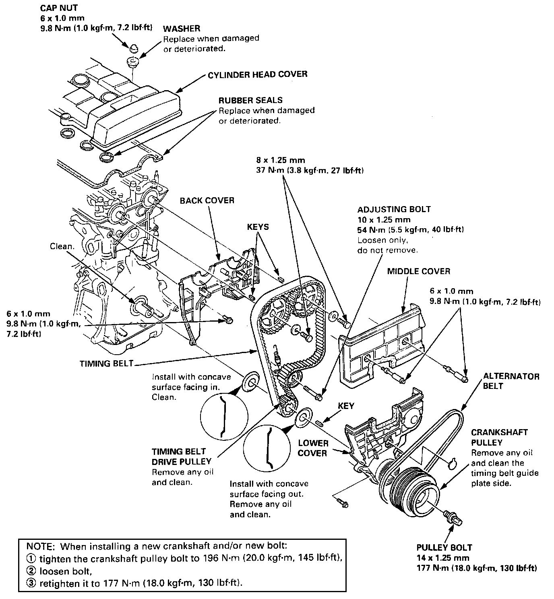

Timing Belt: Locations

Timing Belt
NOTE:
- Position crankshaft and pulley before installing belt.
- Mark the direction of rotation on the belt before removing.
- Replace the rubber seals if there is oil leakage between the cylinder head and cover.
- Do not use the middle cover and lower cover for storing removed items.
- Clean the middle cover and lower cover before installation.
NOTE: When installing a new crankshaft and/or new bolt:
(1) tighten the crankshaft pulley bolt to 196 N.m (20.0 kg.m, 145 lb.ft)
(2) loosen bolt
(3) retighten it to 177 N.m (18.0 kg.m, 130 lb.ft)